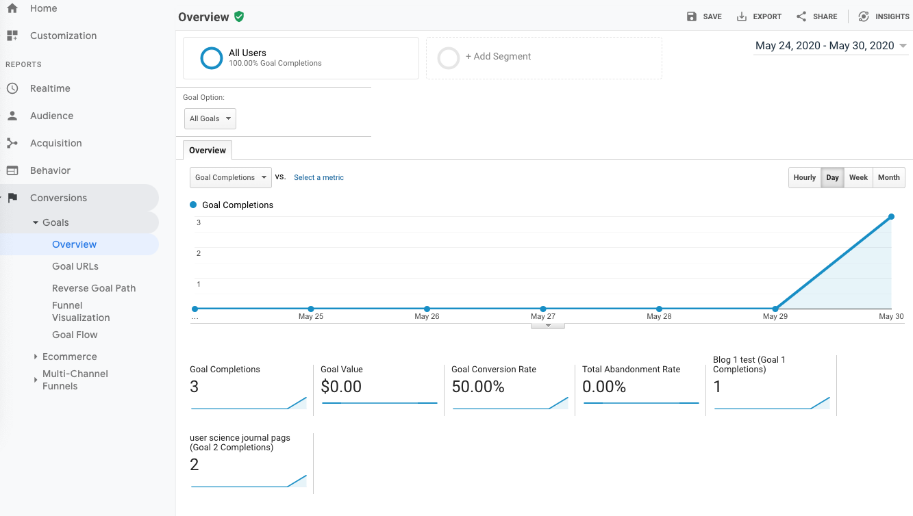

This week, I continue to check in on my own website - User Science Journal - in a second blog to learn more about the analytics of my website. In this blog, I discuss setting up a goal and measuring how I did against that goal.
Setting Up a Goal In Google Analytics
It was surprisingly easy to set up several goals in Google Analytics. I went to my analytics page for my project and clicked on the Admin gear on the left side of the screen.
Once there, I went to the Goals button on the right.
It was very easy then to set up several goals. Since this is a blog website, I decided I’d like to set 2 goals that would show whether there was interest in my blog:
By clicking on the red button for New Goals, it took just 3 steps to set up the goals. For my project, I chose Custom, Duration, and then set the goal for 3 minutes.
I repeated the steps for Pages/Screens per view and selected 2.
Then I prodded some friends to explore the site and waited a day.
Checking on my Goals
I was a little late in getting started on my project this week, so I only had one day after nudging friends to gather some new analytics.
To view them, I went to Conversions > Overview.
I had 3 goal completions:
The format of how the goals are presented is shown in the image below.
A closer look shows me that the pages people visited were the home page, about page and blog post 2.

Conclusion
Setting goals in Google Analytics is a great way to start learning about what works on the website. Including interesting links and driving traffic to the page through other social media would probably push my numbers higher. Installing and tracking the analytics was very easy, which is great-it means that I’m more likely to use this function on a regular basis.